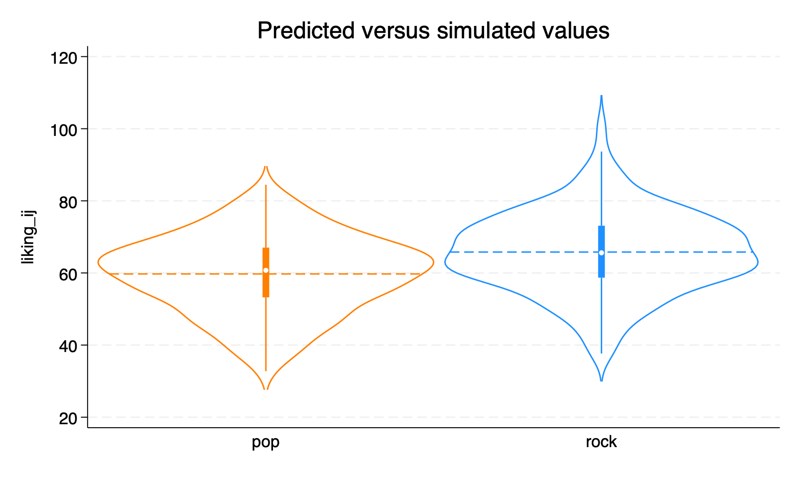
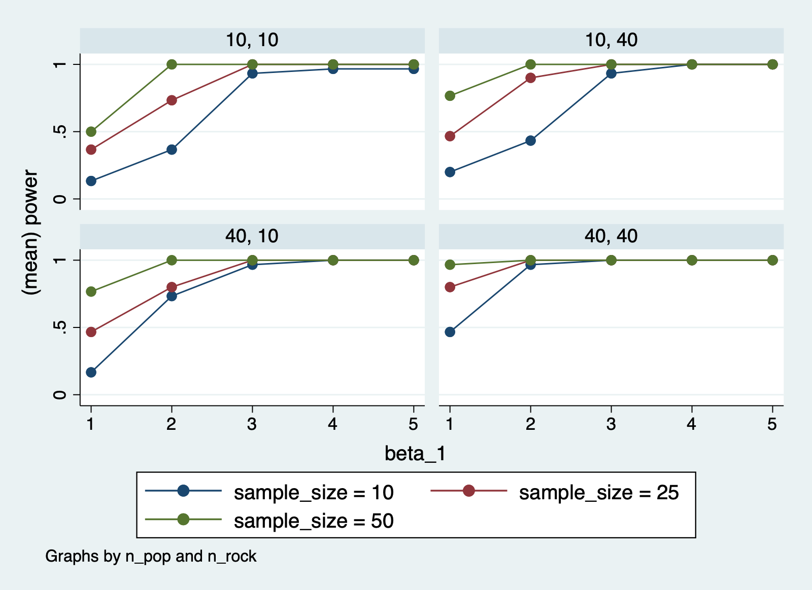

ssc install violinplot, replace // module to draw violin plots
ssc install dstat, replace // violinplot's dependency, module to compute summary statistics
ssc install moremata, replace // violinplot's dependency, module (Mata) to provide various functions
ssc install palettes, replace // violinplot's dependency, module to provide color palettes
ssc install colrspace, replace // violinplot's dependency, module providing a class-based color management system in MataStata
ImportantThis chapter fits a simpler model than the R and Python chapters
The R and Python chapters fit the full crossed design: a by-song random intercept, a by-subject random intercept, a by-subject random slope, and (in R only) the correlation between the two subject effects. This chapter drops three of those parameters — omega_0, tau_1 and rho — and fits a random-intercept model, mixed liking_ij genre_i || subj_id:.
The reason is runtime, not principle. Stata can express the crossed design, as mixed liking_ij genre_i || _all: R.song_id || subj_id: genre_i, cov(un), but fitting it thousands of times over a grid of parameter values takes days rather than minutes, which makes a power simulation of the kind this tutorial teaches impractical in Stata.
Two consequences worth being explicit about:
- The power estimates here are optimistic. Ignoring by-song variance and the random slope shrinks the standard error of
beta_1, so power comes out higher than for the design the study actually has. - They are not comparable with the R and Python chapters, which answer a different (and harder) question.
Read this chapter for the Stata mechanics — programs, return, matrices, looping a simulation — and take the R or Python chapter as the reference for the design itself.
Setup
We will need several Stata packages to draw a violin plot. We can use “ssc install [package_name]” to install them.
We will also set the pseudo-random number generator seed to 02138 to make the stochastic components of our simulations reproducible (this is similar to the process in R and Python).
clear all
set seed 02138Data simulation step by step
To give an overview of the power simulation task, we will simulate data from a reduced version of the design with crossed random factors of subjects and songs (see Power of What? for design details), fit a model to the simulated data, recover from the model output the parameter values we put in, calculate power, and finally automate the whole process so that we can calculate power for different effect sizes.
Establish the simulation parameters
Before we start, let’s set some global parameters for our power simulations. Since simulations can take a long time to run, we’ll use 30 replications here as an example, but we recommend increasing this number to at least 1000 replications for a more accurate final power calculation.
// number of simulation replications for power calculation
global reps = 30
// specified alpha for power calculation
global alpha = 0.05Note: these are Stata global macros (referenced as $reps) rather than local ones. Each code block on this page runs as its own Stata session, and only globals, saved datasets, and programs carry over from one block to the next; in a single do-file, local macros would do the same job.
Establish the data-generating parameters
The first thing to do is to set up the parameters that govern the process we assume gave rise to the data - the data-generating process, or DGP. We previously decided upon the data-generating parameters (see Power of What?), so we just need to code the ones this chapter keeps here.
// set all data-generating parameters
global beta_0 = 60 // intercept; i.e., the mean for the pop genre
global beta_1 = 5 // slope; i.e., effect of category
global tau_0 = 7 // by-subject random intercept sd
global sigma = 8 // residual (error) sdSimulate the sampling process
Next, we will simulate the sampling process for the data. First, let’s define parameters related to the number of observations.
// Set number of subjects and songs
global n_subj = 25 // number of subjects
global n_pop = 15 // number of songs in pop category
global n_rock = 15 // number of songs in rock category
global n_all = $n_pop + $n_rockSimulate the sampling of songs
We need to create a table listing each song \(i\), which category it is in (rock or pop).
// simulate a sample of songs
clear
set obs $n_all
// Generate a sequence of song ids
gen song_id = _n
// Generate the category variable
gen category = "pop"
replace category = "rock" if song_id > $n_pop
// Generate the genre variable
gen genre_i = 0
replace genre_i = 1 if song_id > $n_pop
list in 1/10
gen key = 1
save songs, replaceNumber of observations (_N) was 0, now 30.
variable category was str3 now str4
(15 real changes made)
(15 real changes made)
+------------------------------+
| song_id category genre_i |
|------------------------------|
1. | 1 pop 0 |
2. | 2 pop 0 |
3. | 3 pop 0 |
4. | 4 pop 0 |
5. | 5 pop 0 |
|------------------------------|
6. | 6 pop 0 |
7. | 7 pop 0 |
8. | 8 pop 0 |
9. | 9 pop 0 |
10. | 10 pop 0 |
+------------------------------+
file songs.dta savedSimulate the sampling of subjects
Now we simulate the sampling of participants, which results in a table listing each individual and their random effect (a random intercept). To do this, we must sample \(t_0\) from a normal distribution.
We will use the function rnormal, which generates a simulated value from a univariate normal distribution with a mean of 0 and a standard deviation of tau_0.
// simulate a sample of subjects
clear
set obs $n_subj
// Generate the by-subject random intercept
gen t0 = rnormal(0, $tau_0)
// Generate a sequence of subject ids
gen subj_id = _n
list in 1 / 10
gen key = 1
save subjects, replaceNumber of observations (_N) was 0, now 25.
+---------------------+
| t0 subj_id |
|---------------------|
1. | 4.356949 1 |
2. | .0887434 2 |
3. | .1867903 3 |
4. | 11.24607 4 |
5. | -1.842066 5 |
|---------------------|
6. | 1.966723 6 |
7. | 2.544997 7 |
8. | -9.950144 8 |
9. | -8.176116 9 |
10. | -4.609569 10 |
+---------------------+
file subjects.dta savedCheck the simulated values
Let’s do a quick sanity check by comparing our simulated values to the parameters we used as inputs. Because the sampling process is stochastic, we shouldn’t expect that these will exactly match for any given run of the simulation.
qui summarize t0
egen tau_0_s = sd(t0)
display "tau_0, " $tau_0 ", " tau_0_stau_0, 7, 7.4337502Simulate trials
Since all subjects rate all songs (i.e., the design is fully crossed) we can set up a table of trials by including every possible combination of the rows in the subjects and songs tables. Each trial has random error associated with it, reflecting fluctuations in trial-by-trial ratings due to unknown factors. We simulate this by sampling values from a univariate normal distribution with a mean of 0 and a standard deviation of sigma.
// cross subject and song IDs; add an error term
use subjects, clear
cross using songs.dta
drop key
sort subj_id song_id
gen e_ij = rnormal(0, $sigma)
list in 1 / 10 | t0 subj_id song_id category genre_i e_ij |
|---------------------------------------------------------------|
1. | 4.356949 1 1 pop 0 7.08673 |
2. | 4.356949 1 2 pop 0 -15.5205 |
3. | 4.356949 1 3 pop 0 6.984706 |
4. | 4.356949 1 4 pop 0 16.87559 |
5. | 4.356949 1 5 pop 0 -2.192098 |
|---------------------------------------------------------------|
6. | 4.356949 1 6 pop 0 8.764422 |
7. | 4.356949 1 7 pop 0 -10.27403 |
8. | 4.356949 1 8 pop 0 -5.694414 |
9. | 4.356949 1 9 pop 0 3.550642 |
10. | 4.356949 1 10 pop 0 11.85906 |
+---------------------------------------------------------------+Calculate response values
With this resulting trials table, in combination with the constants beta_0 and beta_1, we have the full set of values that we need to compute the response variable liking_ij according to the linear model we defined previously (see Power of What?).
gen liking_ij = $beta_0 + t0 + $beta_1 * genre_i + e_ij
keep subj_id song_id category genre_i liking_ij
list in 1 / 10
save data_sim, replace | subj_id song_id category genre_i liking~j |
|---------------------------------------------------|
1. | 1 1 pop 0 71.44368 |
2. | 1 2 pop 0 48.83645 |
3. | 1 3 pop 0 71.34165 |
4. | 1 4 pop 0 81.23254 |
5. | 1 5 pop 0 62.16485 |
|---------------------------------------------------|
6. | 1 6 pop 0 73.12137 |
7. | 1 7 pop 0 54.08292 |
8. | 1 8 pop 0 58.66254 |
9. | 1 9 pop 0 67.90759 |
10. | 1 10 pop 0 76.21601 |
+---------------------------------------------------+
file data_sim.dta savedPlot the data
Let’s visualize the distribution of the response variable for each of the two song genres and superimpose the simulated parameter estimates for the means of these two groups.
use data_sim, clear
// Set the palette colors
local palette "orange dodgerblue"
// Create a violin plot for actual data
violinplot liking_ij, over(category) colors(`palette') vertical mean(type(line) lp(dash) stat(mean)) title("Predicted versus simulated values")
quietly graph export "images/stata_violin.png", width(1600) replace
Analyze the simulated data
Now we can analyze our simulated data in a linear mixed effects model using the function mixed. The model formula in mixed maps onto how we calculated our liking_ij outcome variable above.
mixed liking_ij genre_i || subj_id:Performing EM optimization ...
Performing gradient-based optimization:
Iteration 0: Log likelihood = -2670.5389
Iteration 1: Log likelihood = -2670.5389
Computing standard errors ...
Mixed-effects ML regression Number of obs = 750
Group variable: subj_id Number of groups = 25
Obs per group:
min = 30
avg = 30.0
max = 30
Wald chi2(1) = 106.36
Log likelihood = -2670.5389 Prob > chi2 = 0.0000
------------------------------------------------------------------------------
liking_ij | Coefficient Std. err. z P>|z| [95% conf. interval]
-------------+----------------------------------------------------------------
genre_i | 6.072638 .5888334 10.31 0.000 4.918545 7.22673
_cons | 59.72681 1.538746 38.82 0.000 56.71092 62.74269
------------------------------------------------------------------------------
------------------------------------------------------------------------------
Random-effects parameters | Estimate Std. err. [95% conf. interval]
-----------------------------+------------------------------------------------
subj_id: Identity |
var(_cons) | 54.85942 16.12991 30.83036 97.61662
-----------------------------+------------------------------------------------
var(Residual) | 65.01089 3.414539 58.65146 72.05986
------------------------------------------------------------------------------
LR test vs. linear model: chibar2(01) = 377.14 Prob >= chibar2 = 0.0000The terms in formula are as follows:
liking_ijis the response.genre_iis the dummy coded variable identifying whether song \(i\) belongs to the pop or rock genre.|| subj_idspecified a subject-specific random intercept (t0)
The estimated coefficients are stored in e(b), which we can copy into a matrix and list.
matrix b = e(b)
matrix list bb[1,4]
liking_ij: liking_ij: lns1_1_1: lnsig_e:
genre_i _cons _cons _cons
y1 6.0726376 59.726807 2.002387 2.0872774Data simulation automated
Now that we’ve tested the data generating code, we can put it into a program — Stata’s equivalent of a function — so that it’s easy to run it repeatedly.
capture program define sim_data
args n_subj n_pop n_rock beta_0 beta_1 tau_0 sigma
// simulate a sample of songs
clear
local n_all = `n_pop' + `n_rock'
set obs `n_all'
gen song_id = _n
gen category = "pop"
replace category = "rock" if song_id > `n_pop'
gen genre_i = 0
replace genre_i = 1 if song_id > `n_pop'
gen key = 1
save songs, replace
// simulate a sample of subjects
clear
set obs `n_subj'
gen t0 = rnormal(0, `tau_0')
gen subj_id = _n
gen key = 1
save subjects, replace
// cross subject and song IDs
use subjects, clear
cross using songs.dta
drop key
sort subj_id song_id
gen e_ij = rnormal(0, `sigma')
gen liking_ij = `beta_0' + t0 + `beta_1' * genre_i + e_ij
keep subj_id song_id category genre_i liking_ij
endPower calculation single run
We can wrap the data generating function and modeling code in a new function single_run() that returns the analysis results for a single simulation run. The quietly prefix keeps sim_data and mixed from printing their messages, iteration log, and tables for every one of the thousands of fits.
capture program define single_run, rclass
args n_subj n_pop n_rock beta_0 beta_1 tau_0 sigma
clear
quietly sim_data `n_subj' `n_pop' `n_rock' `beta_0' `beta_1' `tau_0' `sigma'
quietly mixed liking_ij genre_i || subj_id:
estimates clear
estimates store model_results
// calculate analysis results.
// `e(b)` holds the coefficients and `e(V)` the variance-covariance matrix,
// so the standard error of the first coefficient is the square root of
// `e(V)[1,1]` -- not `e(V)[1,1]` itself, which is a variance. `mixed`
// reports z tests, so the p-value for that one coefficient comes from the
// normal distribution. (`e(p)` would give the p-value for the overall
// model Wald test, which is a different quantity as soon as the model has
// more than one fixed effect.)
matrix coefficients = e(b)
matrix V = e(V)
scalar b1 = coefficients[1, 1]
scalar se1 = sqrt(V[1, 1])
return scalar coef = b1
return scalar std_err = se1
return scalar p_value = 2 * normal(-abs(b1 / se1))
endLet’s test that our new single_run() function performs as expected.
// run one model with default parameters
single_run 25 15 15 60 5 7 8
return listscalars:
r(p_value) = 4.72641356735e-25
r(std_err) = .5985781770559117
r(coef) = 6.188306213378898// run one model with new parameters
single_run 25 10 50 60 2 7 8
return listscalars:
r(p_value) = .0000102758196073
r(std_err) = .5442572149474949
r(coef) = 2.400874560546836Power calculation automated
To get an accurate estimation of power, we need to run the simulation many times. Here we use a matrix results to store the analysis results of each run. A Stata matrix can have at most 800 rows in Stata/BE, 11,000 in Stata/SE, and 65,534 in Stata/MP, so that is also the largest number of replications this matrix can hold.
We can finally calculate power for our parameter of interest beta_1 by filtering to keep only that term and then calculating the proportion of times the \(p\)-value is below the alpha threshold.
clear
matrix results = J($reps, 3, .)
forval i = 1/$reps {
single_run 25 15 15 60 5 7 8
matrix results[`i', 1] = r(coef)
matrix results[`i', 2] = r(std_err)
matrix results[`i', 3] = r(p_value)
}
clear
svmat results, names(x)
// calculate mean estimates and power for specified alpha
gen power = 0
replace power = 1 if x3 < $alpha
egen coef_mean = mean(x1)
egen std_err_mean = mean(x2)
egen power_mean = mean(power)
di "Coef. Mean: " coef_mean
di "Std.Err. Mean: " std_err_mean
di "Power Mean: " power_meannumber of observations will be reset to 30
Press any key to continue, or Break to abort
Number of observations (_N) was 0, now 30.
(30 real changes made)
Coef. Mean: 4.8985529
Std.Err. Mean: .58440232
Power Mean: 1Check false positive rate
We can do a sanity check to see if our simulation is performing as expected by checking the false positive rate (Type I error rate). We set the effect of genre_i (beta_1) to 0 to calculate the false positive rate, which is the probability of concluding there is an effect when there is no actual effect in the population.
// run simulations and calculate the false positive rate
clear
matrix results = J($reps, 3, .)
forval i = 1/$reps {
single_run 25 15 15 60 0 7 8
matrix results[`i', 1] = r(coef)
matrix results[`i', 2] = r(std_err)
matrix results[`i', 3] = r(p_value)
}
clear
svmat results, names(x)
// calculate power for specified alpha
gen power = 0
replace power = 1 if x3 < $alpha
egen power_mean = mean(power)
di "Power Mean: " power_meannumber of observations will be reset to 30
Press any key to continue, or Break to abort
Number of observations (_N) was 0, now 30.
(0 real changes made)
Power Mean: 0Ideally, the false positive rate will be equal to alpha, which we set at 0.05.
Power for different effect sizes
In real life, we will not know the effect size of our quantity of interest and so we will need to repeatedly perform the power analysis over a range of different plausible effect sizes. Perhaps we might also want to calculate power as we vary other data-generating parameters, such as the number of pop and rock songs sampled and the number of subjects sampled. We can create a table that combines all combinations of the parameters we want to vary in a grid.
// grid of parameter values of interest
matrix define params = (10, 10, 10, 1 \ 10, 10, 10, 2 \ 10, 10, 10, 3 \ 10, 10, 10, 4 \ 10, 10, 10, 5 ///
\ 10, 10, 40, 1 \ 10, 10, 40, 2 \ 10, 10, 40, 3 \ 10, 10, 40, 4 \ 10, 10, 40, 5 ///
\ 10, 40, 10, 1 \ 10, 40, 10, 2 \ 10, 40, 10, 3 \ 10, 40, 10, 4 \ 10, 40, 10, 5 ///
\ 10, 40, 40, 1 \ 10, 40, 40, 2 \ 10, 40, 40, 3 \ 10, 40, 40, 4 \ 10, 40, 40, 5 ///
\ 25, 10, 10, 1 \ 25, 10, 10, 2 \ 25, 10, 10, 3 \ 25, 10, 10, 4 \ 25, 10, 10, 5 ///
\ 25, 10, 40, 1 \ 25, 10, 40, 2 \ 25, 10, 40, 3 \ 25, 10, 40, 4 \ 25, 10, 40, 5 ///
\ 25, 40, 10, 1 \ 25, 40, 10, 2 \ 25, 40, 10, 3 \ 25, 40, 10, 4 \ 25, 40, 10, 5 ///
\ 25, 40, 40, 1 \ 25, 40, 40, 2 \ 25, 40, 40, 3 \ 25, 40, 40, 4 \ 25, 40, 40, 5 ///
\ 50, 10, 10, 1 \ 50, 10, 10, 2 \ 50, 10, 10, 3 \ 50, 10, 10, 4 \ 50, 10, 10, 5 ///
\ 50, 10, 40, 1 \ 50, 10, 40, 2 \ 50, 10, 40, 3 \ 50, 10, 40, 4 \ 50, 10, 40, 5 ///
\ 50, 40, 10, 1 \ 50, 40, 10, 2 \ 50, 40, 10, 3 \ 50, 40, 10, 4 \ 50, 40, 10, 5 ///
\ 50, 40, 40, 1 \ 50, 40, 40, 2 \ 50, 40, 40, 3 \ 50, 40, 40, 4 \ 50, 40, 40, 5)We can now wrap our single_run() function within a more general function parameter_search() that takes the grid of parameter values as input and uses a matrix results to store analysis results of each single_run().
capture program define parameter_search, rclass
args params
local rows = rowsof(params)
matrix results = J(`rows', 7, .)
forval i = 1/`rows' {
local n_subj = params[`i', 1]
local n_pop = params[`i', 2]
local n_rock = params[`i', 3]
local beta_1 = params[`i', 4]
single_run `n_subj' `n_pop' `n_rock' 60 `beta_1' 7 8
matrix results[`i', 1] = `n_subj'
matrix results[`i', 2] = `n_pop'
matrix results[`i', 3] = `n_rock'
matrix results[`i', 4] = `beta_1'
matrix results[`i', 5] = r(coef)
matrix results[`i', 6] = r(std_err)
matrix results[`i', 7] = r(p_value)
}
return matrix RE results
endIf we call parameter_search() it will return a single replication of simulations for each combination of parameter values in params.
parameter_search params
return list
matrix list r(RE)matrices:
r(RE) : 60 x 7
r(RE)[60,7]
c1 c2 c3 c4 c5 c6 c7
r1 10 10 10 1 1.6232882 1.1158218 .14572695
r2 10 10 10 2 2.0062973 1.0905972 .06582231
r3 10 10 10 3 3.4475682 1.1885287 .00372327
r4 10 10 10 4 4.392934 1.0808553 .00004817
r5 10 10 10 5 2.9197601 1.119484 .00910383
r6 10 10 40 1 .72868919 .90381885 .42010813
r7 10 10 40 2 2.064945 .87732725 .01858875
r8 10 10 40 3 3.4548373 .87889482 .00008463
r9 10 10 40 4 4.0100965 .8970772 7.815e-06
r10 10 10 40 5 4.4327375 .88513317 5.500e-07
r11 10 40 10 1 .27104625 .88181806 .75856018
r12 10 40 10 2 1.3236057 .92000673 .150238
r13 10 40 10 3 3.637113 .93378246 .00009819
r14 10 40 10 4 4.160315 .89436915 3.292e-06
r15 10 40 10 5 5.580889 .85211799 5.776e-11
r16 10 40 40 1 .52009808 .54356994 .33865859
r17 10 40 40 2 1.4540983 .561221 .009571
r18 10 40 40 3 2.3241734 .57440286 .00005205
r19 10 40 40 4 2.576086 .5530836 3.198e-06
r20 10 40 40 5 4.4130311 .59235635 9.337e-14
r21 25 10 10 1 -.00893333 .69789469 .98978703
r22 25 10 10 2 .30779735 .69468105 .65770988
r23 25 10 10 3 2.9344834 .71407267 .00003965
r24 25 10 10 4 4.1778176 .72764127 9.379e-09
r25 25 10 10 5 5.9155021 .70524187 4.949e-17
r26 25 10 40 1 1.2316509 .559891 .02782074
r27 25 10 40 2 1.7095442 .57708922 .00305294
r28 25 10 40 3 2.2368743 .57467342 .00009925
r29 25 10 40 4 5.0258179 .58143808 5.439e-18
r30 25 10 40 5 4.2731111 .56820444 5.462e-14
r31 25 40 10 1 1.0390381 .59195054 .07921167
r32 25 40 10 2 1.6820734 .56951845 .00314191
r33 25 40 10 3 2.8046594 .57424622 1.039e-06
r34 25 40 10 4 4.5576676 .55108343 1.335e-16
r35 25 40 10 5 5.0608711 .58455764 4.818e-18
r36 25 40 40 1 .33545354 .34086215 .32505034
r37 25 40 40 2 2.2642519 .36196059 3.962e-10
r38 25 40 40 3 3.4540547 .36462201 2.720e-21
r39 25 40 40 4 4.4082392 .36048809 2.189e-34
r40 25 40 40 5 4.7617614 .35801254 2.298e-40
r41 50 10 10 1 1.3775731 .49021271 .00495178
r42 50 10 10 2 2.0671036 .50475948 .00004218
r43 50 10 10 3 3.837408 .51398335 8.266e-14
r44 50 10 10 4 4.0094784 .50794888 2.939e-15
r45 50 10 10 5 4.5509756 .49389248 3.127e-20
r46 50 10 40 1 .54634245 .40796215 .18050594
r47 50 10 40 2 1.8403869 .39968512 4.133e-06
r48 50 10 40 3 2.8412234 .39322423 4.994e-13
r49 50 10 40 4 3.6821123 .40684345 1.424e-19
r50 50 10 40 5 4.7523879 .40671954 1.527e-31
r51 50 40 10 1 .66228735 .39351667 .09237569
r52 50 40 10 2 2.3323298 .40459205 8.183e-09
r53 50 40 10 3 2.8560804 .41163277 3.965e-12
r54 50 40 10 4 3.708818 .39909868 1.500e-20
r55 50 40 10 5 4.3577439 .39234172 1.160e-28
r56 50 40 40 1 .81108118 .25963249 .00178436
r57 50 40 40 2 1.9790338 .25544931 9.389e-15
r58 50 40 40 3 2.6718788 .25350213 5.658e-26
r59 50 40 40 4 4.0181741 .25572301 1.232e-55
r60 50 40 40 5 4.7752599 .25301401 1.884e-79Then we just repeatedly call parameter_search() for the number of times specified by reps and use postfile to add each row of results to a dataset sims_params, because one matrix holding every row would exceed the matrix row limit in Stata/BE. Fair warning, this will take some time if you have set a high number of replications!
// replicate the parameter search many times
tempname sims
postfile `sims' n_subj n_pop n_rock beta_1 mean_estimate mean_se p_value using sims_params, replace
forval i = 1/$reps {
parameter_search params
matrix RE = r(RE)
// post each row of this replication's results to the dataset
forval j = 1/`=rowsof(RE)' {
post `sims' (RE[`j', 1]) (RE[`j', 2]) (RE[`j', 3]) (RE[`j', 4]) (RE[`j', 5]) (RE[`j', 6]) (RE[`j', 7])
}
}
postclose `sims'
use sims_params, clearNow, as before, we can calculate power. But this time we’ll group by all of the parameters we manipulated in params, so that we can get power estimates for all combinations of parameter values.
gen power = 0
replace power = 1 if p_value < $alpha
drop p_value
collapse (mean) mean_estimate mean_se power, by(n_subj n_pop n_rock beta_1)
list
save sims_table, replace(1,553 real changes made)
+-------------------------------------------------------------------+
| n_subj n_pop n_rock beta_1 mean_e~e mean_se power |
|-------------------------------------------------------------------|
1. | 10 10 10 1 .8518804 1.141737 .1333333 |
2. | 10 10 10 2 2.015188 1.132307 .3666667 |
3. | 10 10 10 3 3.611707 1.120993 .9333333 |
4. | 10 10 10 4 4.21382 1.104315 .9666666 |
5. | 10 10 10 5 4.915577 1.136141 .9666666 |
|-------------------------------------------------------------------|
6. | 10 10 40 1 .9646611 .8951944 .2 |
7. | 10 10 40 2 1.711715 .8920619 .4333333 |
8. | 10 10 40 3 3.147715 .8905005 .9333333 |
9. | 10 10 40 4 4.225182 .8847606 1 |
10. | 10 10 40 5 4.858223 .893694 1 |
|-------------------------------------------------------------------|
11. | 10 40 10 1 .9916084 .9020945 .1666667 |
12. | 10 40 10 2 2.137048 .8952654 .7333333 |
13. | 10 40 10 3 2.921423 .8960313 .9666666 |
14. | 10 40 10 4 3.927615 .9008403 1 |
15. | 10 40 10 5 5.021795 .8879496 1 |
|-------------------------------------------------------------------|
16. | 10 40 40 1 .9360849 .5630384 .4666667 |
17. | 10 40 40 2 2.014773 .564294 .9666666 |
18. | 10 40 40 3 3.194465 .5618773 1 |
19. | 10 40 40 4 3.932215 .5624282 1 |
20. | 10 40 40 5 4.919777 .563199 1 |
|-------------------------------------------------------------------|
21. | 25 10 10 1 1.001032 .7134387 .3666667 |
22. | 25 10 10 2 1.857444 .7081969 .7333333 |
23. | 25 10 10 3 2.962331 .7142764 1 |
24. | 25 10 10 4 4.040242 .7099513 1 |
25. | 25 10 10 5 5.029236 .7204227 1 |
|-------------------------------------------------------------------|
26. | 25 10 40 1 1.04707 .562542 .4666667 |
27. | 25 10 40 2 1.980402 .5620445 .9 |
28. | 25 10 40 3 2.90913 .5654351 1 |
29. | 25 10 40 4 4.030881 .5610904 1 |
30. | 25 10 40 5 5.10218 .5675955 1 |
|-------------------------------------------------------------------|
31. | 25 40 10 1 1.077121 .5654775 .4666667 |
32. | 25 40 10 2 1.885855 .5645031 .8 |
33. | 25 40 10 3 3.096456 .566758 1 |
34. | 25 40 10 4 3.788902 .5657208 1 |
35. | 25 40 10 5 4.948807 .5610379 1 |
|-------------------------------------------------------------------|
36. | 25 40 40 1 1.045176 .359548 .8 |
37. | 25 40 40 2 2.039793 .3584379 1 |
38. | 25 40 40 3 3.000777 .3575 1 |
39. | 25 40 40 4 4.051725 .3576072 1 |
40. | 25 40 40 5 4.989923 .3582708 1 |
|-------------------------------------------------------------------|
41. | 50 10 10 1 .9883525 .5038117 .5 |
42. | 50 10 10 2 2.097131 .5030216 1 |
43. | 50 10 10 3 2.930882 .503418 1 |
44. | 50 10 10 4 3.749865 .506022 1 |
45. | 50 10 10 5 4.924335 .5064674 1 |
|-------------------------------------------------------------------|
46. | 50 10 40 1 .9503928 .4005601 .7666667 |
47. | 50 10 40 2 2.080426 .3983279 1 |
48. | 50 10 40 3 3.110132 .4025852 1 |
49. | 50 10 40 4 3.863661 .3996685 1 |
50. | 50 10 40 5 4.919541 .3981874 1 |
|-------------------------------------------------------------------|
51. | 50 40 10 1 1.049417 .4006564 .7666667 |
52. | 50 40 10 2 1.947035 .400966 1 |
53. | 50 40 10 3 2.997617 .4001157 1 |
54. | 50 40 10 4 3.996079 .4001718 1 |
55. | 50 40 10 5 5.119928 .4001527 1 |
|-------------------------------------------------------------------|
56. | 50 40 40 1 1.044287 .2536 .9666666 |
57. | 50 40 40 2 2.006066 .2528845 1 |
58. | 50 40 40 3 3.013493 .2533133 1 |
59. | 50 40 40 4 3.971136 .2524456 1 |
60. | 50 40 40 5 4.98772 .2537428 1 |
+-------------------------------------------------------------------+
file sims_table.dta savedHere’s a graph that visualizes the output of the power simulation.
twoway (connected power beta_1 if n_subj == 10, sort) (connected power beta_1 if n_subj == 25, sort) (connected power beta_1 if n_subj == 50, sort), scheme(s2color) by(n_pop n_rock) legend(lab(1 "sample_size = 10") lab(2 "sample_size = 25") lab(3 "sample_size = 50"))
quietly graph export "images/stata_final.png", width(1600) replace